Chapter 8
Phonation
As was learned in the previous chapter, the pulmonary system serves as the power source and actuator of the vocal instrument. All musical instruments, of course, must also possess a vibrator (oscillator) that creates the periodic variations in air pressure our ears interpret as sound. The vibrator for the human voice is the larynx, or more specifically, the vocal folds.
That the larynx is able to produce sound at all might be considered biological and evolutionary serendipity. All mammals have larynxes (alternate plural, larynges); however, not all produce sound. Biologically, the larynx primarily serves as a valve, not all that different from the valves found at either end of the alimentary canal. In this capacity, it serves two functions. First, it is the ultimate protector of the airway, helping to prevent foreign objects from entering the lungs (aspiration). Second, it allows people to voluntarily block their airways to increase the intra-abdominal pressure that assists with activities such as elimination, childbirth, and the lifting of heavy objects.
Fundamental Concepts
The Vocal Folds
We begin our study of the larynx with the vocal folds themselves. Housed within the protective cartilage of the larynx, the actual vocal folds are remarkably small. Their total length at rest averages only eighteen millimeters for adult women (about the diameter of a dime) and twenty-three millimeters for men (about the diameter of a quarter). As small as that might seem, the portion of the fold responsible for sound production is even smaller. During phonation, only the anterior part is free to vibrate, a segment that ranges from about twelve to fifteen millimeters long for women and men (Zemlin, 1998). That anything this small can produce a sound loud enough to be heard over a symphony orchestra truly is remarkable.
Most readers will remember a time when singers had “vocal cords,[1]” not vocal folds. This new nomenclature is more than a semantic change. The term vocal fold more precisely describes their true physical characteristics; they are small folds of tissue located in the anterior/posterior plane at the top of the airway. (I have encountered many people who mistakenly believed their “vocal cords” were a series of longitudinal bands arranged in their necks like the strings of an upright piano.)
Before we get down to the details, take a few moments to look at some photographs and short video clips of various larynges and vocal folds (8/1).
Media 8/1a: Female larynx, high pitch
Media 8/1b: Beautiful vocal folds (that have recovered from nodules!)
The vocal folds themselves are visible as two pearly-white bands; they look like the letter V at rest, but come together, closing at the posterior, during phonation. For orientation, the bottom of this V points to the front of your neck and Adam’s apple. The space between the vocal folds is the area called the glottis, which opens for respiration, and closes during phonation. Lying directly above the folds are the pink-colored ventricular folds, also called the false vocal folds—the actual vocal folds alternately are called the true vocal folds to distinguish them from the ventricular or false folds. A curved structure called the epiglottis is seen to arise from the closed point of the vocal folds. Its purpose is to cover the airway during swallowing and direct food into the esophagus toward the stomach.
Vocal Fold Structure
The internal, microscopic structure of the folds plays a significant role in sound production; they are composed of discreet layers of varying density and viscosity, which allows the inner and outer portions to move independently. This layered structure is clearly visible in Figure 8-1.
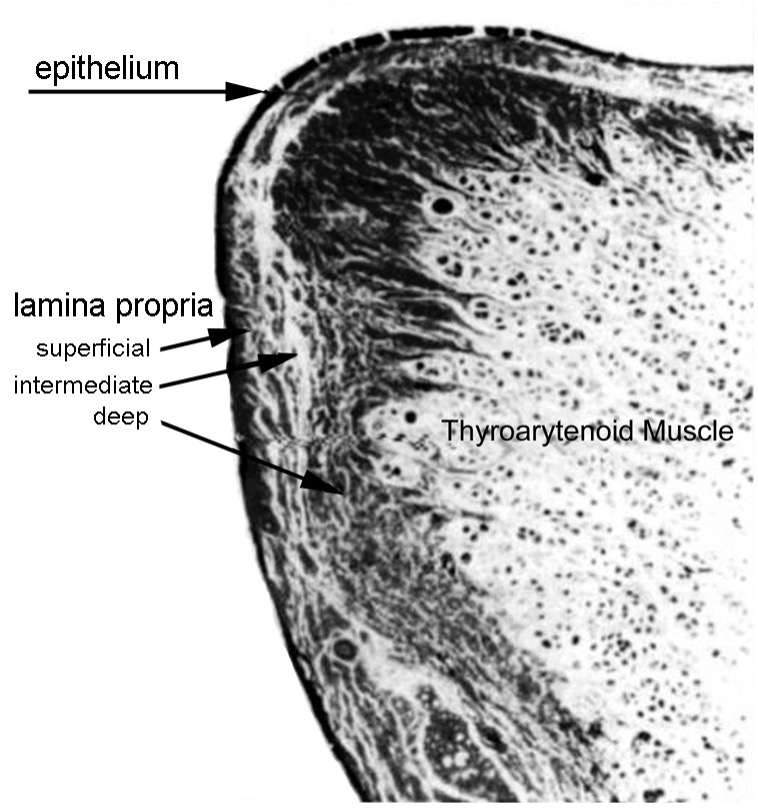
Figure 8-1: Cross section of vocal fold
(Hirano, 1081) Used with permission
We speak of the vocal folds as having a body and cover that are loosely coupled together. The external layer, or cover, consists of a thin layer of skin cells called the stratified squamous epithelium. Its name is derived from its structure, which consists of several layers of skin cells (epithelium) that interlock like paving stones (squamous), which progressively become larger toward the bottom layer (stratified). Because this area is constantly bathed in mucus, it is also referred to as the mucosa of the vocal folds. The entire respiratory tract—from the lips to the bottom of the trachea—is lined with mucosa. This takes the form of stratified squamous epithelium only on the surface of the vocal folds and in some of the areas that lie immediately above them. The remainder consists of columnar epithelium (cells arranged in columns). Below the vocal folds, the columnar epithelium is ciliated. This region is covered with microscopic hairs that constantly transport mucus up the airway for disposal via the esophagus and stomach.
The body of the vocal fold consists of a muscle called the thyroarytenoid, which takes its name from its points of origin (thyroid cartilage) and insertion (arytenoid cartilage). A transitional layer called the lamina propria lies between this muscle and the epithelial cover (Figure 8-2). The lamina propria subdivides into three distinct regions with different physical characteristics, which are caused by changes in the distribution of elastin and collagen fibers. The superficial (outermost) layer is coupled to the epithelium through a basement membrane. This is the thinnest layer and also has the lowest viscosity. (Viscosity is a measure of fluid density. Water has low viscosity; pancake syrup has much higher viscosity.)
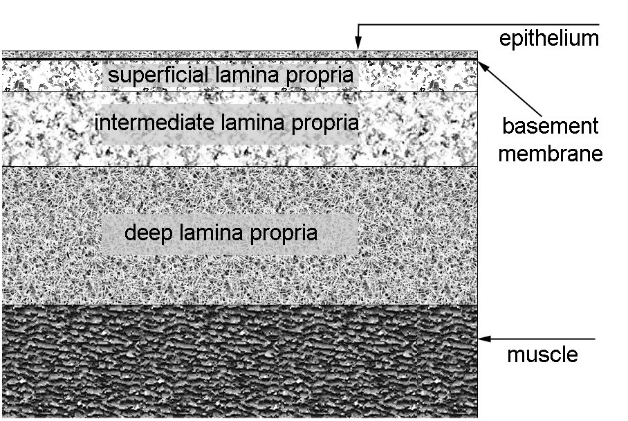
Figure 8-2: Schematic of vocal fold layers
Lying in the middle of the lamina propria, the intermediate layer is both wider and more viscous than the superficial layer. A ligament, called the vocal ligament, passes through this region, resulting in a texture similar to gelatin that has been mixed with strands of cotton. The transition from vocal fold cover to body is completed by the deep lamina propria, which is the densest, most viscous of the three layers. Overall, the structure of the lamina propria might be compared to a three-layered gelatin dessert in which the superficial layer has not completely “set,” the intermediate layer is like normal gelatin (but with those appetizing cotton fibers added), and the deep layer more closely resembles a “gummi bear.”
Construction of the vocal folds in this manner allows the cover to slide gently in position relative to the body. To better understand how this works, try a little experiment on yourself: gently massage the back, and then the palm of your hand. Notice that the skin on the palm is firmly attached to the flesh beneath it. As you massage the back of your hand, however, the skin is relatively free to move (somewhat like the skin of a kitten). Next, gently poke a finger against the palm and back of your hand; the palm offers much more padding than the back, acting somewhat like a shock absorber. Your vocal folds share both of these characteristics; the cover slips over the body like the skin on the back of your hand, while the lamina propria cushions blows like the palm of your hand.
Why is this important? In healthy vocal folds, oscillation is facilitated through the gentle slippage of the cover over the body. When viewed in slow motion, using high-speed or stroboscopic cameras, the surface of the fold appears to ripple in a wavelike motion. This phenomenon is called the mucosal wave, which can be seen clearly in 8/2. Some voice disorders impair phonation by impeding mucosal wave formation. For example, the hoarseness or loss of voice from laryngitis (laryngeal inflammation) results from vocal fold swelling that makes the cover adhere tightly to the body. The folds lose their suppleness and become too rigid to oscillate freely.
Media 8/2a: Excises larynx vibrating in apparent slow motion from stroboscopy
Media 8/2b: High speed (silent) video of vibrating vocal folds showing movement within the layers
Media 8/2c: High speed video clearly showing mucosal wave
The significance of the vocal fold mucosa was not really known until the pioneering discoveries of Hirano and others during the 1960’s and early 1970’s. Their work has enabled major advancements in vocal health care, including new surgical techniques that are less invasive and more likely to result in complete restoration of normal vocal function.
Vocal Fold Oscillation
Muscular activities alone are not able to open and close the glottis rapidly enough for sound production. To understand why, try another experiment. Tap one of your fingers as rapidly as possible on a solid object. If you are particularly dexterous, you might be able to do this as quickly as 7.5 times per second. If you alternate fingers as if playing a trill on the piano, you might approach 15 or more strokes per second. To sing, however, your vocal folds must open and close at a much faster rate—up to 1,400 times per second for the F6 sung by Mozart’s Queen of the Night. No muscle in the human body is able to contract and relax at anything close to that rate. Vibration at this velocity only can be achieved with the assistance of airflow.
Theories of Vocal Fold Oscillation
Voice science has evolved significantly over the past 50 years, leading to greater comprehension of how and why the glottis opens and closes to produce sound. Three main theories have attempted to describe vocal fold oscillation: the myoelastic-aerodynamic model, the one-mass, and three mass-models. Because each new theory is built on the shoulders of the previous, we’ll start at the beginning.
The Myoelastic-Aerodynamic Model
Myoelastic-Aerodynamic theory, which was current through the 1960’s, believed oscillation of the vocal folds was maintained exclusively by muscular (myo-) and aerodynamic processes. The muscular portion of this equation is straightforward and easily understood; the body of the vocal fold is a muscle. To understand the aerodynamic contribution, however, we must return to the world of physics, specifically, the principles established by an eighteenth-century scientist named Daniel Bernoulli.
Bernoulli was particularly interested in fluid dynamics. His most lasting claim to fame was the discovery of the inverse relationship between pressure and volume in a fluid driven system. If the volume of a fluid or gas remains constant as it travels through a passageway, its energy—expressed as pressure times velocity—also remains constant. Therefore, if pressure goes up, velocity must go down (and vice versa).
To model this principle, imagine water flowing through a garden hose. If you partially block the end of the hose with your thumb, the water shoots out much farther. Why? As long you don’t block the end of the hose entirely, the same quantity of water will flow out as is put into it from the other end at the spigot. But the water must speed up to travel through the constriction you have created (8/3). Behind this constriction, the water pressure increases and velocity decreases; through the constriction, velocity increases and pressure decreases. Remember, the amount of water flowing through the hose is the same at all times—to get the same amount of water through a smaller space requires it to flow at a faster speed.
Media 8/3: Animation showing pressure/velocity in Bernoulli Effect
Commuters often are frustrated by another example of the Bernoulli Effect: traffic jams. Rush-hour traffic is moving down a three-lane highway at the speed limit. The road is well designed and can comfortably handle the number of cars currently driving on it. But if two of those lanes are closed for construction, a traffic jam will occur. Pressure increases behind the constriction—in the form of irate motorists in barely moving vehicles—and the velocity of each car decreases. Upon entering the single open lane, pressure from the traffic backup is relieved, allowing individual cars to accelerate and move steadily through construction zone. These kinds of traffic jams could be avoided if civil engineers would heed the Bernoulli principle. To maintain the same traffic flow, cars must speed up, not slow down while passing through the one-lane sections of highway. Of course, doubling the speed limit through construction zones has other potential consequences, most of which are not particularly safe!
Let’s return now to vocal fold oscillation and the role of the Bernoulli Effect. This is most clearly seen if we describe the steps in a single cycle of vibration:
- The vocal folds are gently closed by muscular forces within the larynx
- Air pressure increases beneath the closed glottis
- Increasing air pressure begins to open the glottis. Because of the ability of the cover to move independently of the body, this opening begins on the underside of the glottis
- The glottis continues to open, from bottom to top, until air begins to escape
- As the air begins to flow through the glottis, its velocity increases and its pressure decreases, as explained by the Bernoulli Effect
- Elasticity of the vocal fold acts somewhat like a spring, exerting a return force that begins to close the glottis; negative pressure caused by the Bernoulli effect supplies additional closing force
- The glottis closes again, from bottom to top
- As soon as the glottis is fully closed, the process begins again, repeating as many times per second as the frequency of the pitch being spoken or sung
The steps in this process are shown in Figure 8-3 and are animated in 8/4.
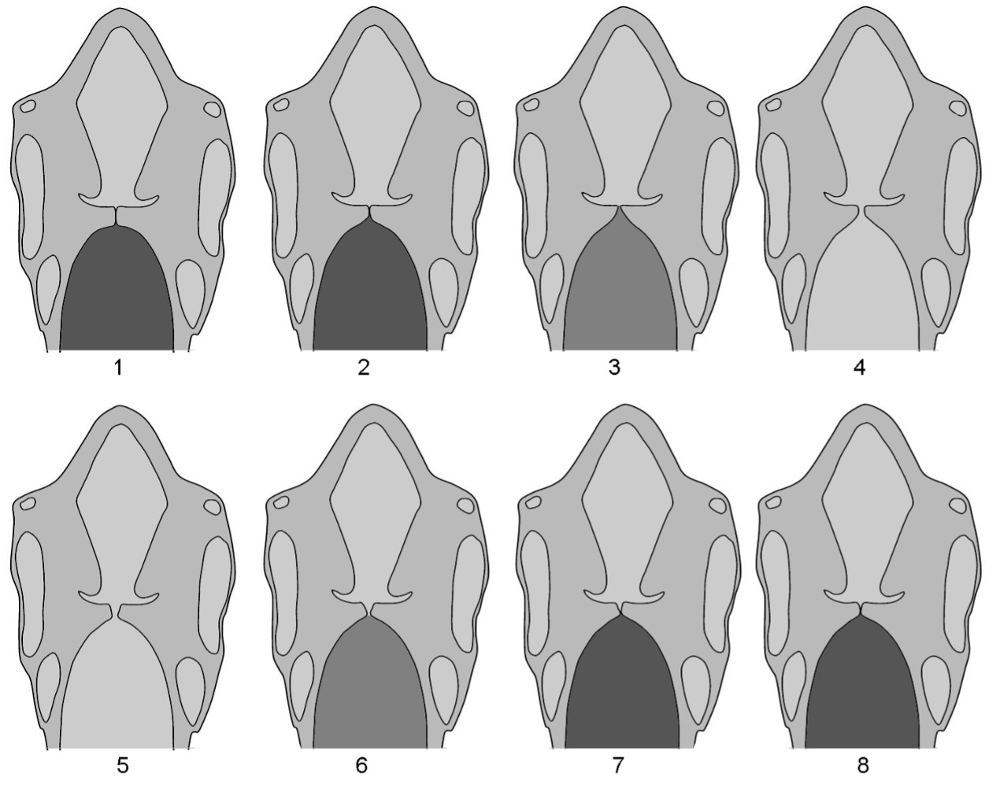
Figure 8-3: One cycle of vibration
Media 8-4: Animation of vocal folds
These images present the glottis in a longitudinal cross-section, slicing the larynx from top to bottom through the medial/lateral plane. Note the vertical phase difference between the lower and upper edges of the vocal folds throughout the oscillatory cycle. During phonation, glottal opening and closure always occurs in this manner with movement of the lower edge preceding the upper edge (at high pitch, the folds often are so thin that this phase difference no longer is significant). Independent movement of the inferior and superior portions of the vocal folds is a major factor in the creation of the mucosal wave; as the folds make contact at their lower edge, a wave begins to ripple across their surface, much like a wave traveling across the surface of a pond into which a pebble has been dropped.
Scientific understanding of the role played by the Bernoulli Effect in maintaining vocal fold oscillation continued to evolve. Some reported that the reduced pressure through the glottal opening was strong enough to actively suck the vocal folds back together (Zemlin, 1998); others attributed a smaller contribution (Ishizaka and Matsudaira, 1972). Current voice scientists describe numerous interrelated factors that contribute to vocal fold vibration, including the natural oscillation frequencies of vocal fold tissue (which shares properties in common with a spring), the resistance to the movement of air through the supraglottal vocal tract, and the interaction of resonance with the vocal folds. This new information indicated that aerodynamic factors could initiate oscillation, but were insufficient to maintain it.
The One-Mass Model[2]
Myoelastic-Aerodynamic theory was significantly improved by adding the contribution of the vocal tract and its impact on airflow. In the physical world, objects experience inertia, which is resistance to starting and stopping movement. The vocal folds and the air moving through the vocal tract also are subject to this natural law. Let’s see how it impacts vocal fold oscillation.
- As in the M-A theory, the glottis initially is closed by muscles in the larynx
- Subglottal air pressure increases until it overcomes the muscular and tissue resistance and opens the glottis
- Reduced air pressure through the glottis (Bernoulli) and elasticity/inertia of the vocal folds brings the glottis back together, reducing the flow of air
- Because of inertia, air above the glottis continues its forward motion in spite of reduced flow through the glottis, producing an area of low air pressure immediately above the glottis
- The combined forces of elastic recoil of the folds, the pressure drop through the glottis, and the low pressure region above the glottis complete the cycle, closing the glottis
- Asymmetry of air pressure below and above the glottis (steps 1-5) allows vocal fold oscillation to continue for as many times per second as Fo of the pitch that is spoken or sung
The One-Mass model is superior to the aerodynamic model, but still doesn’t account for everything that is observed during vocal fold vibration. Because each vocal fold is viewed as a single mass that oscillates uniformly, the asymmetrical opening (vertical phase difference) of the glottis, which is clearly visibly during stroboscopic and high-speed imaging, remains unexplained.
The Three-Mass Model
Further improvements are made to oscillation theory by describing the vocal folds as three interconnected masses. In this model, the body of the vocal fold (thyroarytenoid muscle) is the first and largest mass. The upper and lower portions of the cover (lamina propria and epithelium) comprise two smaller masses. In this model, the glottis opens and closes asymmetrically with vertical phase difference from bottom to top. Air pressure also is asymmetrical, increasing when the glottis is in a convergent shape (bottoms of the two folds are farther apart from each other), and decreasing when the glottis is divergent (tops of the two folds are farther apart) (Figure 8-4). This asymmetry of air pressure provided by the three-mass model, combined with the impact of pressure changes above the glottis caused by inertia, is sufficient to sustain vocal fold oscillation.[3]
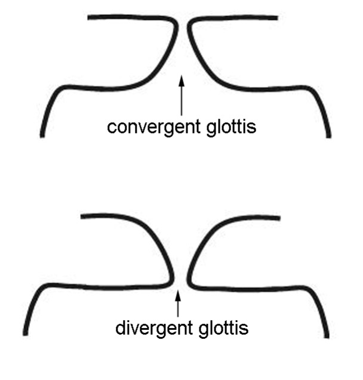
Figure 8-4: Glottal configurations
From the fringe…
While myoelastic/aerodynamic theory and the subsequent one and three-mass models dominate current voice science, they are not the only explanations of vocal fold oscillation that have been promoted. Raoul Husson (1901-67), a French scientist and voice enthusiast, developed what is called the neurochronaxic theory. Husson believed that nerve impulses from the brain are the sole cause of vocal fold vibration and that airflow only is needed to carry the sound outside the body. Even though this theory has been discredited scientifically, one still encounters a few singers who try to base their singing technique on it.
Structural Anatomy
Laryngeal Framework—Meet the “Oids”
To this point in the chapter, we have been looking at vocal folds as independent entities abstractly fixed somewhere in space. This is not, of course, the case. The vocal folds are enclosed within the structural framework of the larynx, a complex biological device composed of bone, cartilage, membranes, ligaments, and muscles. In the average adult male, the entire larynx is no larger than the size of a typical English walnut. In women, it is about 40% smaller—perhaps analogous to the size of a pecan. Take a moment to find your own larynx in your neck. It might be large and prominent, as often is the case in tall, slender males, or it might be so small that you barely can see or feel it in your neck. Use your thumb and fingers to gently palpate it, noting its size, lumps and bumps. You need not be squeamish—you won’t hurt yourself.
The larynx is suspended from the hyoid, a wishbone-shaped bone that is located in the anterior neck, just below the jaw (Figure 8-5). Because the hyoid has no joint connecting it to the skeleton, it enjoys substantial freedom of movement. (The only other bones in the body that have no skeletal connections are the patellae or kneecaps.) Find your own hyoid bone by again palpating your larynx. It is located about a finger’s width above the largest part of the larynx and will feel like a little ridge. Notice that as you swallow, the hyoid and larynx ascend a little; if you yawn, they probably will descend. Because the larynx is attached to the hyoid, any movement of that bone is transferred to the larynx. Paleoanthropologists believe this freedom of movement was a crucial evolutionary step in the development of language; without it, the articulations reqired for speech are impossible.
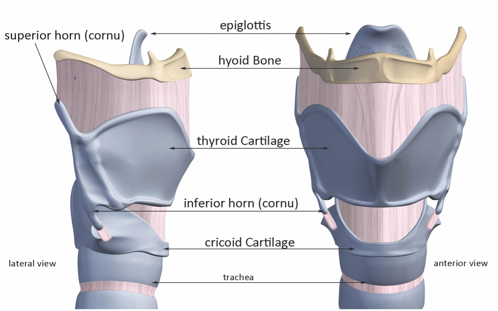
Figure 8-5: Laryngeal framework
The hyoid bone also is the attachment point for the base of the tongue, several muscles of the jaw, and several muscles that are important for swallowing. Unfortunately, this situation can lead to technical problems for singers. Many structures important in singing share attachments to the hyoid bone; improper postures and tensions therefore easily are transferred from one location to another. This is particularly true of jaw and tongue tensions, which are passed directly down to the larynx.
Five cartilages form the basic laryngeal framework (Figure 8-6). The largest of these is called the thyroid cartilage, which is shaped somewhat like a shield. You will note that several laryngeal structures have the suffix –oid in their names. This is an anatomical suffix indicating “like,” just as the word ovoid means like an oval. In the case of the thyroid cartilage, the name comes from the Greek word for a shield and literally means shield-like.
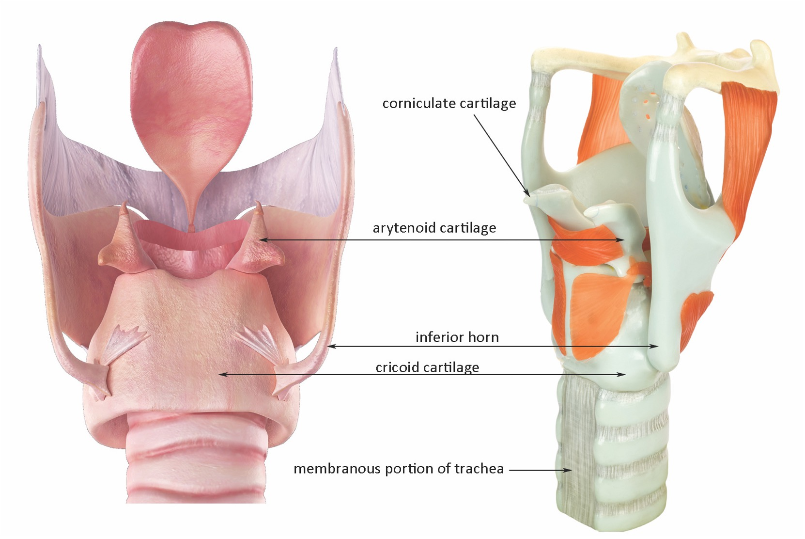
Figure 8-6: Laryngeal framework (posterior view)
For the sake of absolute clarity, it is a good idea always to say the complete name of the thyroid cartilage. If you simply say “thyroid,” the vast majority of people will assume you are talking about the thyroid gland (Figure 8-7). This gland is part of the endocrine system and helps to control a range of bodily functions, ranging from heart rate and body weight, to menstrual cycles and cholesterol levels. Many people experience disease or dysfunction in the thyroid that requires surgical intervention. Because of its close proximity to the larynx—not to mention the fact that nerves that innervate the larynx run right through the gland—thyroid surgery comes with an elevated risk for neurologic voice damage. So, if you must have surgery on your thyroid, but sure to speak with your entire medical team, reinforcing that you are a singer who uses your voice professionally. It never hurts to be a bit extra careful!
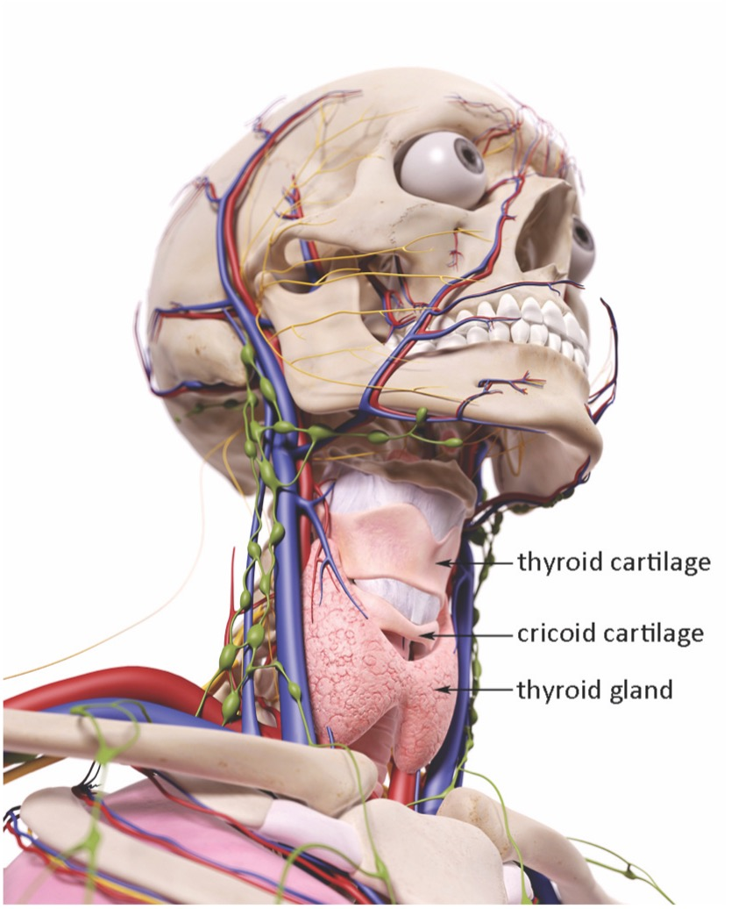
Figure 8-7: Thyroid gland & other structures
When you palpate your larynx, the thyroid cartilage is the largest structure you feel. It has a small notch at its anterior, superior point, which varies in prominence from person to person. The anterior attachment point of the vocal folds is located slightly below this notch, a location called the anterior commissure (Figure 8-7). Two projections called the superior horns or cornu extend upward from the posterior of the cartilage and connect through a ligamentous capsule to the hyoid bone. Two additional projections called the inferior horns extend downward to attach to the cricoid cartilage below (Figures 8-5/6).
The cricoid is the second largest laryngeal cartilage and the only one to form a complete circle. Its shape is often compared to that of a signet ring, with one side considerably wider than the other; in this case, the wide portion is at the posterior (Figures 8-5/6). The cricoid is attached to the inferior horns of the thyroid cartilage through synovial joints, which allow the cartilages to both pivot and slide in position relative to each other. The importance of this movement becomes apparent when the next cartilages are set in place, the arytenoids.
Two arytenoid cartilages sit atop the posterior, superior surface of the cricoid. They are shaped rather like malformed pyramids with a triangular base and a top that droops toward the side like an elf’s hat (Figures 8-5/6). Synovial joints connect the arytenoids to the cricoid, permitting them to rotate on its surface and to slide together and apart. The arytenoids are the posterior point of attachment for the true vocal folds as well as connecting points for all the muscles that open and close the glottis.
A leaf-shaped cartilage called the epiglottis is found at the top of the larynx. Attached to the inside of the thyroid cartilage just below the notch, it folds over during swallowing to direct the bolus (chewed material that is swallowed) into the esophagus, preventing it from going down the airway.
The final laryngeal connection is to the trachea, also known as the windpipe, which is composed of a series of incomplete cartilaginous rings that are held together and closed in the posterior by a membrane (Figure 8-8). This structure gives the trachea great flexibility, allowing it to be distended, compressed or even gently twisted. In this regard, it somewhat resembles the flexible tubing that is used to vent clothes dryers. The trachea descends into the thorax where it bifurcates (divides in two) at a location called the carina into the two bronchial tubes, which further divide into the lobar bronchi for insertion into the lungs.
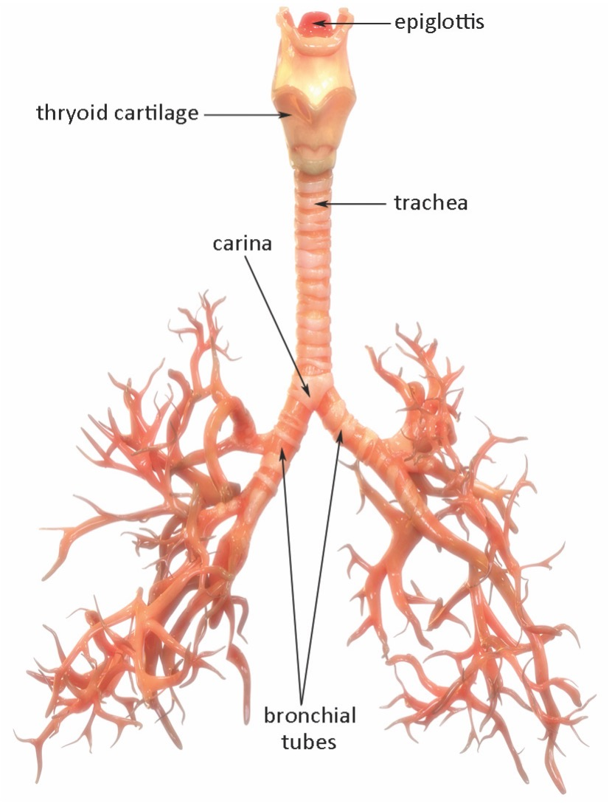
Figure 8-8: Larynx, trachea, bronchi
In addition to the membranous portion of the trachea, several membranes and ligaments are found within the larynx. Just as its name implies, the thyrohyoid membrane is located in the area between the thyroid cartilage and the hyoid bone. Its purpose is to link the two structures, providing a seal and preventing excess movement. Two small holes are found toward the sides of this membrane through which pass one pair of the nerves that serve the larynx (Figure 8-9).
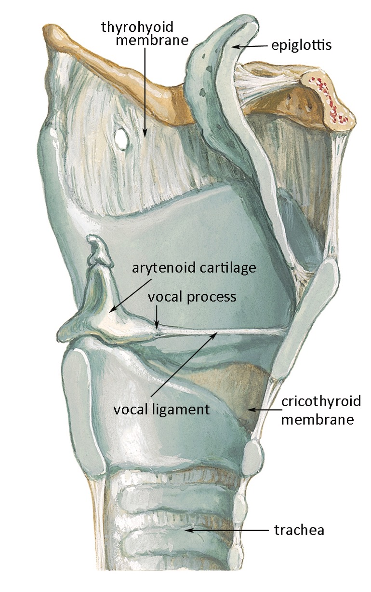
Figure 8-9: Lateral view of membranes and cartilages
Netter medical illustration used with permission of Elsevier. All rights reserved.
Both a membrane and ligament are located in the anterior space between the cricoid and thyroid cartilages, labeled, of course, cricothyroid. Their function is similar to that of the thyrohyoid membrane. An additional membrane is found lining the inside of the cricoid cartilage called the conus elasticus, which strengthens the underside of the vocal folds and seals them to the airway below.
An important structure called the aryepiglottic fold is found at the top of the larynx, which is alternately called the laryngeal collar or the epilarynx (Figure 8-10). This region is formed of muscle and tissue that encapsulates the epiglottis and arytenoids, helping to pull the epiglottis down to cover the airway for swallowing. As we have previously learned, the epilarynx plays an important role in vocal resonance and is the probable source of the singer’s formant.
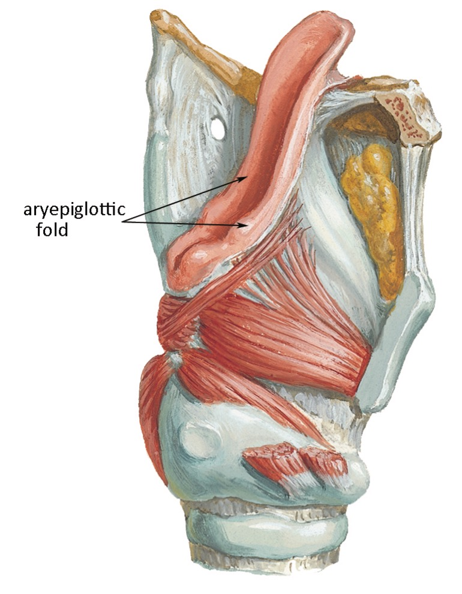
Figure 8-10: Aryepiglottic fold
Netter medical illustration used with permission of Elsevier. All rights reserved
The piriform sinus makes another important contribution to resonance, helping to attenuate frequencies beyond 4kHz (Figure 8-10 and Chapter 3).
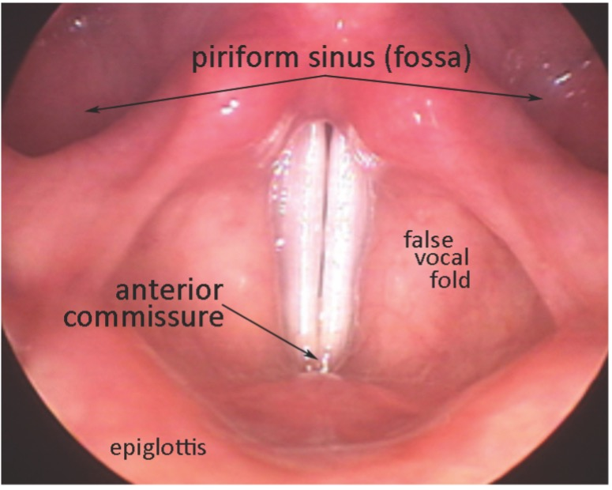
Figure 8-11: Laryngeal structures
Finally, the previously mentioned vocal ligaments extend from the thyroid cartilage at the anterior commissure to insert into the arytenoid cartilages at the vocal processes (Figures 8-9, 8-11).
(As a reminder, an anatomical process is a point of attachment, not an action.) This ligament, which runs through the intermediate lamina propria, is made of filamentous strands resembling cotton fibers. Its purpose is to add strength to the medial edges of the vocal folds and to limit the extent to which they can be stretched.
Physical Actions Required for Phonation
Phonation requires four independent but interrelated laryngeal actions. To initiate and sustain phonation, the vocal folds must be drawn together to close the glottis, an action called adduction.[4] Conversely, they must be drawn apart, opening the glottis to stop phonation and for respiration, an action called abduction (Figure 8-12). If you get confused by these two terms, think about the exercise machines you use at the fitness center to strengthen your thighs through adduction and abduction. Because both speech and singing are inflected with a variety of pitches, a mechanism also must exist for lengthening and shortening the vocal folds. In this regard, the vocal folds function somewhat like a rubber band; when stretched, they become thinner and tighter, producing oscillations of higher frequency.
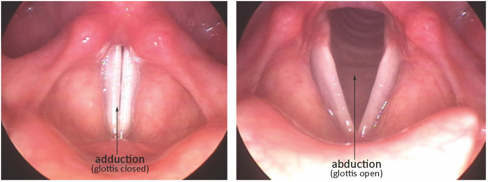
Figure 8-12: Adductions and Abduction
The above actions are the responsibility of the intrinsic laryngeal muscles. Intrinsic muscles reside within the larynx itself and directly interact with the vocal folds or epiglottis. Extrinsic laryngeal muscles also connect to the larynx—often through the hyoid bone—and serve to position it in the vertical plane, raising and lowering it for swallowing and articulation.
Before we examine the intrinsic musculature, please take a few minutes to watch an extended video (8/5). In this demonstration you will see adduction, abduction, lengthening and shortening of the vocal folds while the singer performs a variety of vocal maneuvers.
Media 8/6: Extended video showing various vocal maneuves
Intrinsic Laryngeal Muscles
As previously mentioned, the body of the true vocal fold is formed by the thyroarytenoid muscle (TA), which is named for its origin at the thyroid cartilage and insertion into the vocal process of the arytenoid cartilage (Figure 8-13, 8/6). On contraction, it draws the arytenoid cartilage closer to the anterior thyroid cartilage, thereby shortening the vocal fold and lowering pitch.
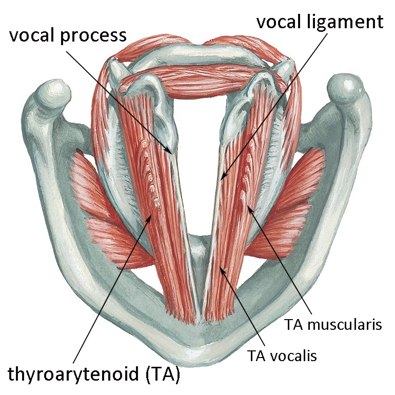
Figure 8-13:Thyroarytenoid muscle and vocal ligament (superior aspect)
Netter medical illustration used with permission of Elsevier. All rights reserved
Media 8-6: opening and closing the glottis
Primary muscle fibers in the thyroarytenoid run laterally, parallel to the medial edge of the fold. Additional fibers are present as well, running both in the transverse plane, perpendicular to the medial edge, and in the horizontal plane. As a result, the muscle is capable of a complex range of movement, both shortening and thickening the vocal folds. The thyroarytenoid actually is a wedge-shaped muscle bundle that completely fills the space between the medial edge of the vocal fold, the front and sides of the thyroid cartilage, and the arytenoid cartilage.
Because its function is to shorten and thicken the vocal folds, the thyroarytenoid is the primary muscle in the production of low-pitched sound, and is strongly associated with the quality often referred to as chest voice or modal register (see Chapter 10). Contraction of the thyroarytenoid also is used to thicken the vocal folds while singing high pitches, thereby widening the contact patch between the folds during oscillation, increasing loudness and enhancing the production of harmonic overtones (Sundberg, 1987). In the highest registers, such as the male falsetto or female whistle voice, the thyroarytenoid may become almost totally passive.
The medial edge of the thyroarytenoid (behind the vocal ligament) is sometimes called the thyrovocalis muscle, or simply the vocalis. It is therefore differentiated from the remainder of the TA muscle, which then is labeled the thyromuscularis. Anatomically, these are different aspects of the same structure; functionally, however, the two portions have little independence. For the remainder of this book, the term thyroarytenoid (TA) indicates the entire muscle.
Acting as the primary antagonist to the thyroarytenoid and serving to elongate the vocal folds, the paired cricothyroid muscles arise from the external surface of the cricoid to insert on the inside of the thyroid cartilage (Figure 8-14).

Figure 8-14: Cricothyroid muscle
Netter medical illustration used with permission of Elsevier. All rights reserved.
Each cricothyroid (CT) is in two portions, the pars recta, which run vertically, and the pars oblique. No independent function has been demonstrated for these two bellies. On contraction, the cricoid and thyroid cartilages are drawn closer together at the anterior of the larynx. The pivot point for this action is the synovial joint where the inferior horns of the thyroid attach to the cricoid. As a result, when the front portions of the two cartilages are brought closer together, their rear portions are pulled farther apart, which in turn lengthens and thins the vocal folds. This action is demonstrated in 8/7.
Media 8-7: Animation of crycothyroid action
The cricothyroids are the primary muscles of high-pitched sounds, particularly those associated with the vocal qualities identified typically as head voice for women, light mechanism, and falsetto. In singing, there is a constant interplay between the TA and CT muscles as pitch rises and falls. This is particularly apparent in transition ranges, often called passaggi; if the exchange of control from one set of muscles to the other is not perfectly synchronized, the voice is likely to crack or break. This issue is discussed in Chapter 10.
To initiate phonation, the glottis must be closed through adduction of the vocal folds, which is accomplished through the actions of two separate pairs of muscles (Figure 8-15).
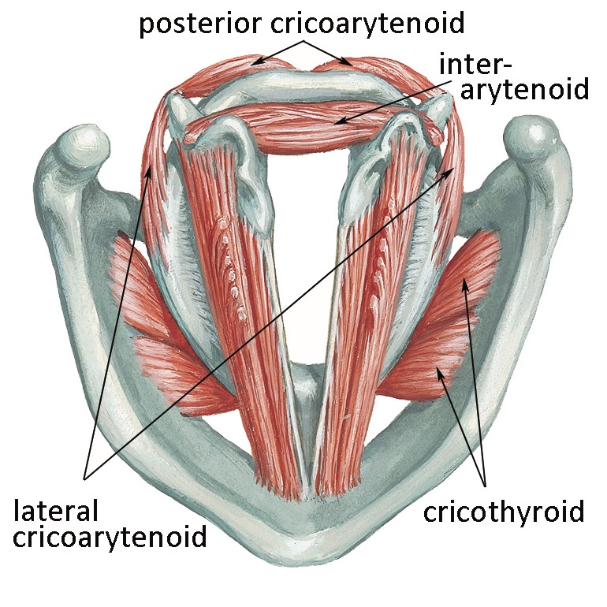
Figure 8-15: Muscles with connections to the arytenoids
Netter medical illustration used with permission of Elsevier. All rights reserved.
The lateral cricoarytenoid (LCA) muscles take their name from their point of origin on the superior, lateral surface of the cricoid cartilage and their insertion into the muscular processes of the arytenoids. On contraction, they rotate the arytenoids, bringing the vocal processes together to close the posterior portion of the glottis. Action of the lateral cricoarytenoids alone, however, results in incomplete glottal closure, allowing a significant quantity of air to pass through an open gap. This space is closed by action of the interarytenoid (IA) muscles, which run between the two arytenoid cartilages (Figure 8-15). IA muscles have two portions: the transverse interarytenoid, which slides the two arytenoids together along the surface of the cricoid cartilage; and the oblique interarytenoids, which crisscross behind the transverse portion of the muscle and continue into the aryepiglottic fold.
To stop phonation and to maximally open the airway for respiration, the glottis must be opened through abduction of the vocal folds. This is the job of the posterior cricoarytenoid muscles, which arise from the posterior surface of the cricoid cartilage and fan-out to insert into the muscular processes of the arytenoid cartilages adjacent to the insertion point of the lateral cricoarytenoids (Figure 8-15, 8-16).
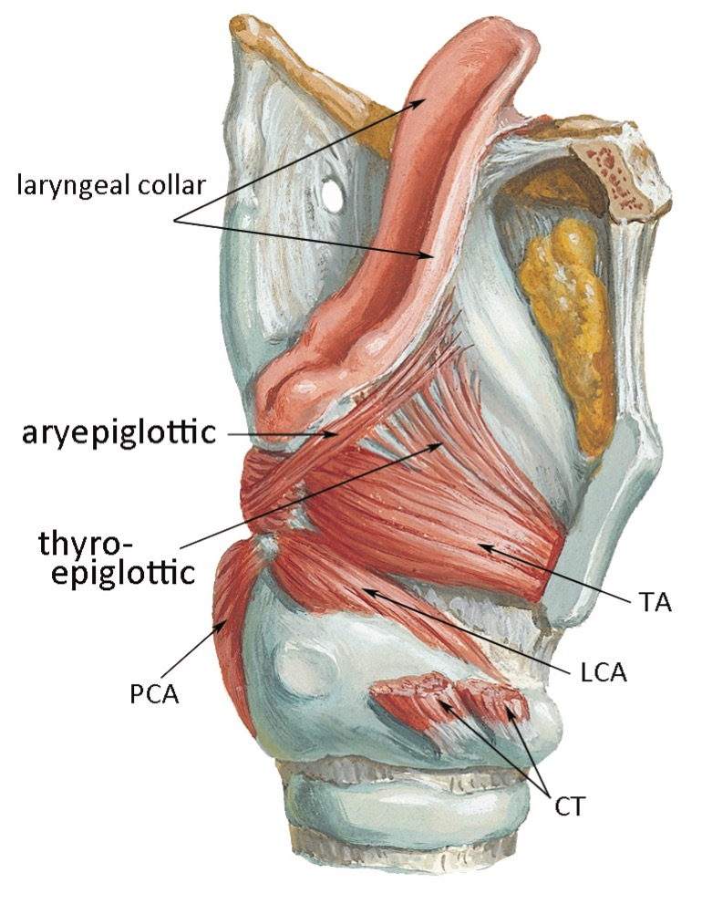
Figure 8-16: Lateral view, partially dissected
Netter medical illustration used with permission of Elsevier. All rights reserved
On contraction, the arytenoids are rotated in a direction opposite from the action induced by the lateral cricoarytenoid muscles, thereby opening the glottis. Since they abduct, they are direct antagonists to both the LCA and IA muscles. They also, however, can serve as antagonists to the thyroarytenoids, stabilizing the arytenoid cartilages in the fore/aft plane atop the cricoid to resist their movement during TA contraction.
The final two intrinsic laryngeal muscles assist with swallowing, not phonation. As previously mentioned, the epiglottis must be pulled downward when swallowing, covering the glottis to prevent choking. This is the job of the aryepiglottic and thyroepiglottic muscles, which, as their names suggest, originate from the arytenoid and thyroid cartilages and insert into the aryepiglottic fold (Figure 8-16). During singing, these two muscle pairs often tilt the epiglottis slightly backward while simultaneously narrowing the laryngeal outlet at the epilarynx, thereby enhancing the strength of the singer’s formant.
When we view the larynx in coronal cross section, additional significant structures become apparent. Figure 8-17 presents this view looking from the posterior of the larynx.
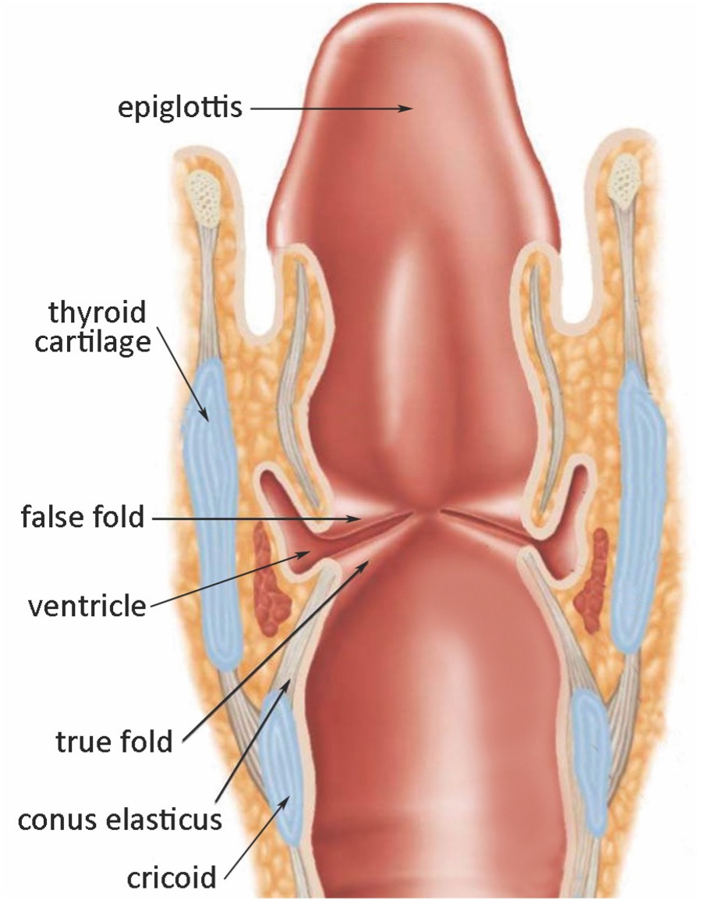
Figure 8-17: Coronal cross section of larynx
The overall wedge shape of the true vocal folds is now clearly visible, as is the extent to which they fill in the space along the sides of the thyroid cartilage. Immediately above the true folds are two small openings called the laryngeal ventricles. This location is particularly rich in cells that produce mucus that bathes the vocal folds.
Lying above the laryngeal ventricles are the false vocal folds. Because these evolutionary vestiges cannot be fully adducted or tensed, they have nothing to do with normal phonation. Some people, however, have the ability to squeeze the entire larynx tightly enough to bring the false folds into contact, producing a raspy, rattling sound that resembles the voice of the immortal jazz musician Louis Armstrong.
Onset, Offset and Phonation Modes
Before we move on to extrinsic laryngeal anatomy, let’s take a time out from muscles and their attachment points to examine phonation modes. Whenever we speak or sing, sound must be initiated, sustained and stopped, all of which happens through the coordinated efforts of the larynx and pulmonary system. Three fundamental options exist for each of these phonatory phases, which resemble the predicament faced by Goldilocks in the famous children’s tale involving the three bears: too hard, too soft, and just right. Examples of these variations are found here.
The initiation of vocal tone is described as onset. An alternate term, attack, has fallen into disuse because of its potentially negative connotation. Any time phonation begins, two things must happen: 1) the vocal folds must be adducted; 2) breath pressure must be increased to exceed phonatory threshold pressure. (Phonatory threshold pressure, or PTP, is the pressure required to overcome the resistance of glottal adduction and initiate vocal fold oscillation.) Three principle types of onset are used, which differ in the sequencing of adduction and airflow, and in the amount of energy expended to initiate sound.
A glottal onset (glottal stop or hard onset) occurs when strong adduction precedes breath energy. In this articulation, the glottis is squeezed tightly shut by the adductor muscles, after which subglottal pressure is increased until breath explodes through the glottis; strong glottal onsets resemble a grunt (8/8).
Media 8/8: Types of onsets
Excessive use of these harsh onsets can lead to pathological voice problems, including vocal nodules. Gentle glottal onsets, however, should have no negative impact on the voice; indeed, if they did, virtually all speakers of German and English would have voice disorders! The key is degree. A successful glottal onset must have only enough adduction prior to phonation to produce the appropriate phoneme.
The polar opposite of the glottal onset is the aspirate (breathy or soft) onset. Adduction and breath flow now occur in the reverse order; breath flow is started, and the vocal folds are slowly adducted into the moving air until the Bernoulli Effect enables oscillation to begin. Aspirate onsets are usually marked by a distinct /h/ that precedes each utterance. Like the glottal extreme, excessive use of strong aspirate onset can lead to voice problems, including chronic incomplete glottal closure and muscular tension dysphonia.
The goal, of course, is to begin the tone with a balanced (simultaneous) onset in which adduction and airflow begin at precisely the same instant. The resulting sound is clean and easy, without the strong click of the glottal stroke or the hissing of the aspirate. Singers can practice balanced tonal onset using exercises that require gentle re-articulation of repeated notes.
A great deal of confusion and controversy has arisen over the onset recommended by the great 19th century pedagogue Manual Garcia II, which he labeled the coup de la glotte (stroke of the glottis). As described by Garcia, this onset was performed by firmly closing the glottis prior to onset, resulting in a clean initial sound with accurate intonation. Complete glottal closure also led to a clean, vibrant sustained tone without surplus airflow. Unfortunately, Garcia predates the invention of sound recording, so we have no direct evidence of how singers actually employed the coup de la glotte. I believe, however, that he was describing a clean, balanced onset. Singers and their teachers sometimes use the idea of a “silent H” as the basis for onset. The better option might be to think of a “silent glottal,” which follows more in Garcia’s tradition and the benefits he described.
Offset (release) also occurs in hard, soft and balanced variants (8/9).
Media 8/9: Types of offsets
The glottal (hard) offset stops sound by forcefully and tightly adducting the glottis to cut off airflow abruptly, usually accompanied by a grunting noise. This offset is used for expressive purposes by some opera singers, particularly verismo and spinto tenors. Like extremely harsh glottal onsets, excessive use of this offset can lead to voice damage; it is probably best to avoid it. Singers who have problems with unintentional hard releases might try stopping the tone by reversing airflow, ending the note with a silent inhalation through an open glottis.
Aspirate offset occurs when the vocal folds are abducted while air continues to flow. As with onset, aspirate offset is accompanied by an obvious /h/ as the air rushes through the now opened glottis. While this option offers fewer opportunities for voice damage, it is not particularly aesthetic, and should therefore be avoided—unless it is sung tastefully and in moderation to characterize words such as “sigh” or “sospiro.”
When abduction occurs at the exact instant breath flow stops, a balanced offset occurs. Again, the sound is clean and effortless. For most singers, such releases are easier to produce in the lower and middle portions of the voice. Higher pitches, which require increased glottal adduction and higher air pressure, are more difficult to end in a balanced way. In this case, the technique mentioned for curing unwanted glottal offsets might prove helpful.
Optimal production of sustained tones requires a perfect union of airflow and adductory tension. When this occurs, the tone is described as balanced (8/10). Some voice scientists, including Johann Sundberg, refer to this as flow mode phonation (Sundberg, 1987). If adduction is too tight, the result is a harsh sound that is described as pressed. Pressed tones are produced when the closed phase in the oscillation cycle is significantly longer than the open phase. If, however, the open phase is too long, the tone becomes aspirate or breathy. In extremely aspirate phonation, the vocal folds might never completely close, but simply chop into the moving air stream (which is sufficient to create the periodic pressure changes required to generate sound). This helps explain why unamplified breathy voices rarely are as loud as those that are clear.
Media 8/10: Phonation modes
The quality of sustained phonation is strongly influenced by the method of onset; aspirate onset almost always leads to aspirate phonation, while glottal onset tends to induce a pressed sound. Understanding the physiological steps behind these variations helps inform teachers of appropriate steps toward improvement. For example, we now know that the singer with a breathy voice is probably doing two things: she is not adducting the glottis firmly enough, and she is blowing out too much air. Therefore, to correct the problem, both issues must be addressed. The breath can be corrected by proper implementation of muscular antagonism in the support process; insufficient adduction might be improved through judicious application of exercises that employ glottal onset (under close teacher supervision, of course). Working in this manner is somewhat like the swing of a pendulum. If the voice is functioning too far in one direction, apply a little of the opposite extreme as a counterbalance, realizing that the goal is to find the appropriate balance near the center.
Advanced Concepts
Control of loudness and pitch
We now understand that there is a close relationship between laryngeal and respiratory events during onset, offset and sustained phonation. What happens when we need to change pitch or loudness? Again, a dynamic relationship exists, this time including elements of breath pressure, glottal adduction, airflow rate, vocal fold length, and the thickness of the vocal folds at their vibrating margins.
Intensity Control
Intuition tells us singers must increase breath pressure to increase amplitude. This is true—at least to an extent—but only explains part of the process. If breath pressure is increased and glottal adductory tension remains constant, the sound will probably get slightly louder; but it also will rise in pitch and has the potential to become aspirate from excess airflow. You can demonstrate this action by wrapping your arms around someone as if you are going to perform the Heimlich maneuver; while the person sings, gently tug inward against his abdominal wall as if you are trying to stop him from choking. Each time you pull against him, the sound will spike in loudness, but pitch also will rise by about a whole step. To avoid this intonation effect, glottal resistance must be increased concurrently with subglottal air pressure. Increased resistance causes the vocal folds to oscillate at higher amplitude (greater range of motion) and to close more quickly during each cycle of vibration. As closing velocity within the vibratory cycle increases, the ratio of time the glottis is closed—the closed quotient—also is likely to increase. The result is a crisper, firmer cessation of airflow that increases the amplitude of the soundwave.
You can simulate the above scenario by clapping your hands. First, clap in slow motion. The closing rate at which your hands come together is low and the sound produced will be muted. Now, clap vigorously; the closing rate is much faster and the resulting sound is significantly louder.
You can use clapping to demonstrate another factor in changing intensity: the thickness of the vocal folds at their medial edges. As amplitude increases, the glottis must work harder and harder to resist subglottal air pressure. This occurs through increased contraction in the adductor muscles (LCA and IA) and through contraction of the thyroarytenoid to create medial tension in the glottis. Remember, thyroarytenoid contraction results in shortening and/or thickening of the vocal folds; when the TA contracts in isometric antagonism with the CT muscles, one result is thickening of the vocal folds. This widens the contact area between the two folds and effectively increases the vocal fold mass that is in oscillation. To demonstrate the impact of changing thickness on amplitude, sequentially clap one, two, three, and then all four fingers of one hand against the other. You will hear the sound progressively get louder as the width of the clapping hand increases. Changes in the vertical thickness of the vocal folds induce similar changes in amplitude.
Intensity Control by the Numbers
When air pressure and glottal adduction work in tandem, doubling subglottal pressure should increase sound output by eight to twelve decibels (Seikel, 2000). How does this translate into real-life experience for singers? As we learned in the previous chapter, professional singers typically vary air pressure over a range of roughly 0.3 to 6 kPa. From minimum to maximum, pressure is therefore redoubled about 5.25 times (0.3, 0.6, 1.2, 2.4, etc.). Using the figure of a 12dB increase for every doubling of pressure, we can estimate a theoretical dynamic range of 63dB (5.25 X 12). A study by Linda Carroll et al (2002) supports this figure. Voice range profiles (VRP), which measure the minimum and maximum amplitude throughout a singer’s range, were compiled for a group of professional and non-professional singers in various voice classifications (e.g. dramatic and lyric tenor). Dramatic voices were found to have a typical dynamic range of 60-64dB with a maximum amplitude exceeding 120dB; lighter voices often showed a similar overall range, but with a lower absolute maximum (Figure 8-18). These voice range profiles also demonstrate a relationship between fundamental frequency and amplitude, with loudness steadily rising in response to higher pitch. Titze (1994) reports that doubling the fundamental frequency (musical interval of an octave) increases amplitude at the glottal sound source by 6dB. While not completely consistent, results from the VRP study generally support this theoretical finding as well.
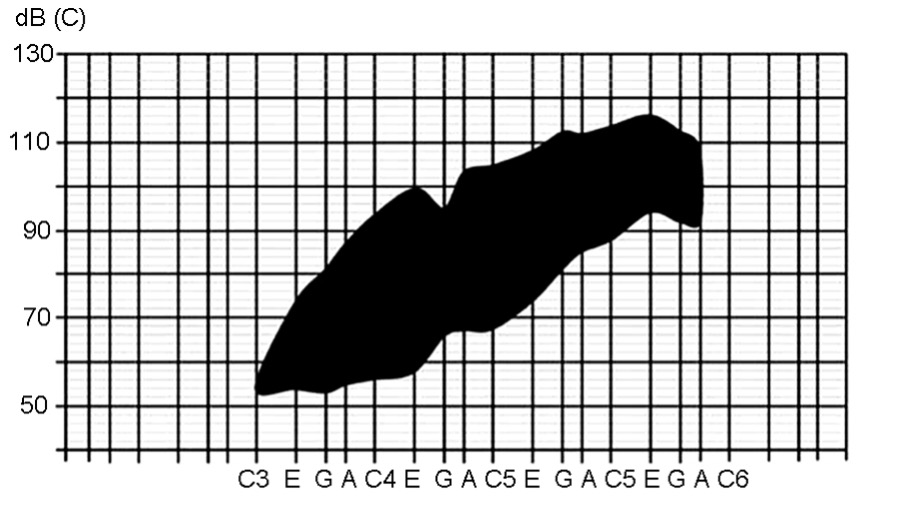
Figure 8-18: Average voice range profile for a group of professional coloratura sopranos
Variations in breath pressure and glottal adduction directly impact the duration of the opening and closing phases of vocal fold oscillation. As adduction and pressure increase, the length of time the glottis remains open becomes progressively shorter. Seikel estimates that during quiet phonation, the folds are in their opening phase for 50% of each cycle, in the closing phase for 37%, and are completely closed for 13%. In louder phonation, the opening phase may diminish to 33%, while the closing phase remains at 37% and the closed phase jumps to 30%. Titze (1994) looked at this issue from a different perspective, examining the open quotient during phonation at varying amplitudes. Open quotient represents the time the glottis is open during each cycle; a measurement of 0 indicates the glottis never opens, a measurement of 1 indicates the glottis never fully closes. Amplitude was found to steadily increase as the open quotient fell from 1.0, reaching its peak somewhere between 0.5 and 0.6 (at an open quotient of 0.5, the open and closed phases are equal). Further decreases in open quotient resulted in reduced sound output and an increasingly pressed vocal quality.
What does all this mean for singers and singing teachers? We must remember that breath support is not solely responsible for variations in loudness. Singers who simply “blow harder” to increase volume are very likely to sing sharp. The correct balance between laryngeal tension and breath pressure must be found. Unfortunately, we are neither able to sense nor directly control adductory tension within the larynx. Research, however, tells us that balance will likely occur somewhere along the continuum between a breathy and a pressed sound, perhaps at the point where the glottis remains closed for just a bit longer than it is open. Singers might discover this point by sustaining tone at a constant dynamic level while gradually shifting from aspirate to pressed phonation. A little experimentation should yield a timbre that is clear and vibrant with virtually no sensation of breath pressure or flowing air. This should be the point of optimal coordination between subglottal pressure and laryngeal tension that will enable the singer to produce his widest possible range of pitch and loudness.
Singers who have access to a well-equipped voice laboratory could repeat this experiment with the help of electroglottography, supplementing subjective perceptions with objective measures of closed quotient.
Pitch Control
As with control of intensity, pitch control requires an exquisite interplay between laryngeal tension and breath pressure. In very general terms, the vocal folds must be elongated for pitch to ascend and shortened for pitch to descend. As we know, the cricothyroid muscles are responsible for elongation and the thyroarytenoids for shortening.
The simple act of changing length, however, is not the sole cause of pitch modulation. When the vocal folds are lengthened, they become thinner, tighter, and more rigid. In this regard, they can be compared to the strings of a guitar. When the tuning peg is turned, the string is drawn tighter, it becomes more rigid and—even though you probably can’t see it with the naked eye—it becomes thinner. The result is increased frequency of vibration. The vocal folds, however, have no tuning peg to tighten them; to achieve the same effect, they must be physically pulled longer or stiffened by some other means.
To better understand the pitch control process, we need to remember the body/cover structure of the vocal folds. At lower frequencies, the entire fold tends to oscillate. As pitch ascends, however, the body and cover become more independent, and for the highest pitches (including those of the male falsetto), the vocal folds might thin to the point where only the very leading edge of the cover is in oscillation. Pitch and intensity control overlap at this point. Higher pitches require longer, stiffer and narrower vocal folds, but louder sounds require thicker vocal folds that offer more resistance to glottal airflow. This simultaneous lengthening and thickening of the folds might appear to be a paradoxical vocal technique, but it really is not. Again, we encounter the antagonistic relationship between the cricothyroids and thyroarytenoids, assisted by the stabilizing efforts of the posterior cricoarytenoids. The CT muscles pull the folds to the appropriate tension for a given pitch while the TA muscles counter with appropriate tension for the given amplitude. All of this, as will be shown in Chapter 12, is under the careful monitoring and control of the ear and brain.
Pitch and Breath Pressure by the Numbers
High pitches tend to require more subglottal air pressure than low pitches. Some questions remain, however, as to cause and effect. We know that stiffening the vocal folds increases fundamental frequency. One of the by-products of this increased rigidity is the need for greater air pressure to overcome glottal resistance and establish vocal fold oscillation. Simply increasing air pressure also can raise fundamental frequency. This should come as no surprise to singers who are experienced in controlling flatting through careful attention to breath support. Titze (1989) examined the relationships among fundamental frequency, vocal fold length, and breath pressure. Results show that variations in air pressure impact lower fundamental frequencies more strongly than higher frequencies. Vocal fold length was also a key factor. An increase of subglottal pressure from 0 to 2.5 kPa induced an increase of nearly 150Hz in the fundamental frequency of simulated vocal folds with a length of 50mm; however, the same increase in subglottal pressure elevated the fundamental frequency of vocal folds stretched to 120mm by less than 25Hz. This helps explain why intonation problems are more easily corrected by breath support adjustments in the lower part of a singer’s range than at higher pitches.
So far, we only have examined the role of intrinsic laryngeal muscles for pitch and intensity control; an additional possible contributor, however, is found among the extrinsic laryngeals. As previously noted, extrinsic muscles connect to the larynx or hyoid bone and are primarily responsible for vertical height adjustments. Three of the extrinsics, however, are constrictor muscles that wrap around the entire vocal tract to produce a downward thrust for swallowing. The lowest of the three, the inferior constrictor, attaches to either side of the thyroid cartilage and wraps around the vocal tract and the base of the esophagus; contraction narrows the pharynx and elevates the larynx (Figure 8-19). But there is a possible side effect of its contraction, especially in younger singers whose laryngeal cartilages have not yet begun to ossify.
Ossification is the gradual transformation of cartilage to bone; in young people, laryngeal cartilages—especially the thyroid—are soft and relatively flexible. Unfortunately, this flexibility often leads to vocal instability and unpredictability. Ossification, which is well underway by early adulthood, greatly reduces this flexibility and leads to a more stable, predictable tone (this is one of the advantages that older singers have over younger ones). In a pre-ossified larynx, contraction of the inferior constrictor might squeeze the sides of the thyroid slightly closer together, thereby elongating the entire cartilage in the anterior/posterior plane. This elongation stretches the vocal folds, effectively “lending a hand” to the cricothyroids to create higher pitches. When the cartilage ossifies, the inferior constrictor no longer can help stretch the vocal folds. But by then, laryngeal elevation and pharyngeal squeeze may have become habitual elements of singing technique that are very difficult to change.
Laryngeal elevation is a common technical problem faced by young singers. While elevation can result from a variety of reasons including poor support, excess jaw and/or tongue tension, or even inappropriate tuning of formants, a real possibility is found in the role of the inferior constrictor and its potential impact on pitch. In this case, heightening the sensation of the open throat—accomplished through relaxation of all the constrictors—may significantly help with laryngeal stabilization.
Summary of Intensity and Pitch Control
|
activity |
muscles |
actions |
|
pitch lowering |
thyroarytenoid |
muscle contracts to shorten and thicken vocal folds, reducing their tension while increasing mass per unit length |
|
pitch raising |
cricothyroid (primary); thyroarytenoid and inferior constrictor (secondary); expiratory muscles |
vocal folds are made longer, thinner and stiffer, requiring increased subglottal breath pressure to sustain vibration. TA works antagonistically with CT to maintain amplitude control with changing pitch |
|
intensity control |
expiratory muscles; adductor muscles (LCA and IA); thyroarytenoid |
pulmonary system increases subglottal air pressure while adductors tighten to increase glottal resistance and TA contracts to enlarge vibrating margin of vocal folds, increasing the mass per unit length |
Extrinsic Laryngeal Musculature
Extrinsic laryngeal muscles differ from the intrinsic muscles by virtue of attachments and function. Intrinsic muscles are self-contained within the larynx itself; extrinsics extend their attachments to other physiological structures. A few of the extrinsics exist solely for the purpose of raising or lowering the larynx. Most, however, also serve as muscles of the tongue, jaw, palate, or pharynx (sometimes more than one), and often are directly related to swallowing.
Take a moment once again to palpate your larynx. Now, as you gently hold the thyroid cartilage between your thumb and index finger, swallow. You will feel your larynx sharply ascend—it may travel several centimeters in people with particularly long necks. This helps fold the epiglottis over the airway to prevent choking, while simultaneously directing whatever is being swallowed into the top of the esophagus. Neither of these actions works properly if the larynx does not rise. Several other things also must occur when you swallow. First, the soft palate is lifted, closing off the nasal port (the area between the soft palate and the nasopharynx) so foreign matter isn’t pushed up into the nose. (Most of us remember occasions from our childhood when we laughed while drinking, causing fluid to spew from our nose.) Simultaneously, your tongue elevates and retracts, pushing food into the throat, while the walls of the pharynx constrict to assist in the process. At the conclusion of the swallow, the larynx lowers and the epiglottis returns to its resting position.
Constrictor Muscles
The role of constrictors was briefly discussed under the heading of pitch control, which, of course, is not their primary function (Figure 8-19). Three sets of constrictors are found. The superior constrictor wraps around the top of the vocal tract in the region of the naso- and oropharynx, attaching to the skull and mandible.
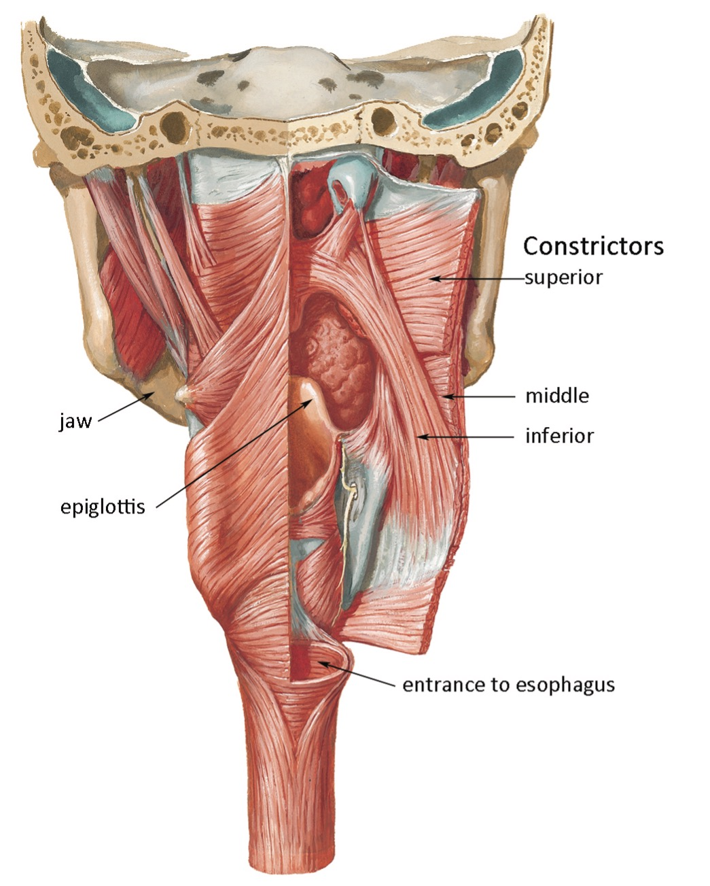
Figure 8-19: Constrictor muscles
Netter medical illustration used with permission of Elsevier. All rights reserved
Next we come to the middle constrictor, which attaches to the hyoid bone and the stylohyoid ligament. This ligament runs from hyoid to the styloid process of the skull (a small projection that extends from the base of the skull at a point just below the opening for the ear canal). The inferior constrictor lies at the bottom of this muscle complex, attaching to the thyroid laminae (sides of the cartilage between the two horns) as well as the cricoid cartilage. Functionally, the upper two constrictors primarily serve to narrow the pharynx, assisting in the transport of food to the esophagus, while the inferior muscle constricts the pharynx and lifts the larynx.
Most vocal pedagogies advocate some sensation of an open throat—indeed, it is such a universal ideal that it is given a special term in Italian: gola aperta. But while we have many muscles that can narrow or close the throat, none exist to open it[5]. The soft palate can be elevated by several millimeters to increase vertical space, possibly providing sensations of an open throat in the process. But the remainder of the vocal tract, including the naso-, oro- and laryngopharynx, only can be tensed or relaxed. This is perhaps one of those pedagogic situations in which “doing nothing” actually feels like “doing something.” Maximum opening of the throat occurs when all tension is released from the three sets of constrictor muscles. The sensation is one of active opening; the cause, however, is passive relaxation.
Laryngeal Elevators
Very few—if indeed any—opera singers are able to produce their best sounds with the larynx held in an elevated position. Unfortunately, nature conspires to do just that. A natural reflex exists between the soft palate and the larynx: because of the swallowing reflex, when one goes up, the other rises as well. Optimal singing, however, requires a high soft palate accompanied by a low laryngeal position (not depressed, but simply allowed to remain at or a little below its normal resting place). This means that the plethora of muscles that can elevate the larynx must be taught to relax during phonation.
Laryngeal elevation occurs in one of two ways: it is lifted directly through an attachment to the thyroid or cricoid cartilage; or, it is lifted indirectly through the hyoid bone, which is connected to the larynx, tongue and jaw. This latter source of elevation is particularly troublesome for singers, since tensions in one region so easily influence other areas and often mask the true origin of a problem.
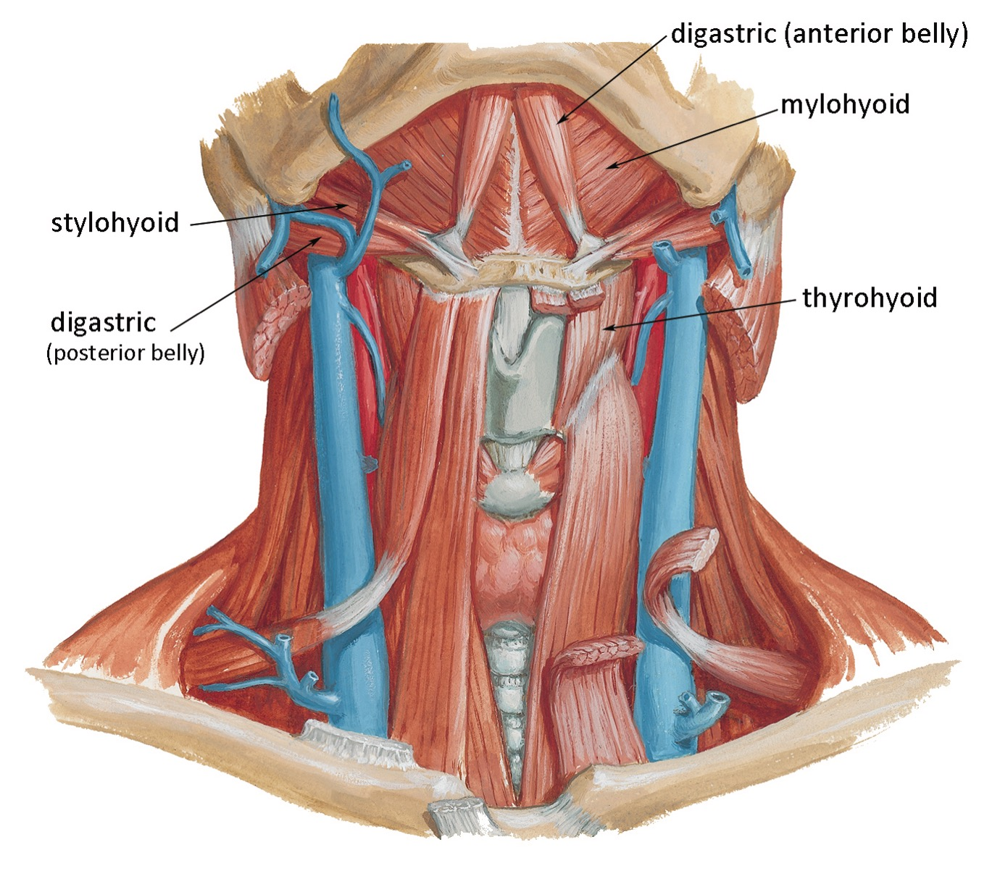
Figure 8-20: Laryngeal elevators
Netter medical illustration used with permission of Elsevier. All rights reserved
Only two sets of muscles originate from the larynx itself and therefore function as direct or true elevators (Figure 8-20). We have already discussed the inferior constrictor muscles, which elevate the larynx and constrict the pharynx for swallowing. The remaining direct elevators are the thyrohyoid muscles, which arise from the inferior edges of the thyroid cartilage and insert into the hyoid bone. One would expect this muscle to act by pulling the hyoid bone (point of insertion) toward the thyroid cartilage (point of origin), thereby depressing the larynx. This is not, however, the normal action of the muscle, which lifts the larynx and partially closes the gap between the thyroid cartilage and hyoid. Excess tension in this muscle is a common factor in the vocal health problem known as muscular tension dysphonia (see Chapter 9), which often is a precursor to more serious pathologies.
The remaining laryngeal elevators are linked to the larynx through the hyoid bone. Most of them also serve alternate functions, such as lowering the jaw or moving the tongue. The paired digastric is an example of a dual-purpose muscle, serving to raise the larynx and/or lower the jaw. Unfortunately, this muscle is very adept at performing these two functions simultaneously. Each digastric has two independent bellies; the anterior digastric originates at the hyoid bone and inserts to the mandible near the center point, while the posterior digastric originates at the mastoid process of the skull (a point just anterior and inferior to the ear canal) and inserts to the hyoid. Contraction of the anterior portion of this muscle induces jaw depression; the posterior portion lifts the hyoid and larynx during swallowing. If, however, the muscles that close the jaw (masseter, temporalis, medial pterygoid) fail to release while the jaw is opened, the jaw becomes rigidly fixed in place. In this situation, contraction in the anterior digastric still lowers the jaw, but also elevates the larynx. The juxtaposition of a tight, over-extended jaw with a lifted larynx frequently is seen in younger singers, especially those who have been trained to maintain “three fingers of space” while singing in choir. This can be a particularly pernicious habit to break.
The stylohyoid muscle takes its origin from the styloid process and inserts again into the hyoid bone, following the same general course as the stylohyoid ligament (Figure 8-20). This is a true swallowing muscle, contracting to draw the hyoid and larynx both up and back. Lying above the stylohyoids and digastrics, the mylohyoid muscles form the muscular floor of the mouth. These fan-shaped muscles radiate from the centerline between the point of the chin and the hyoid bone and insert into the inside edges of the mandible. Contraction produces an action similar to that of the digastrics, combining jaw depression with laryngeal elevation. Continuing inward toward the tongue itself, we come to the geniohyoid muscle, which extends from the point of the chin back to the hyoid bone. Again, this either depresses the jaw or raises the larynx, depending on which structure is more loosely held in position.
Two muscles that primarily serve articulatory functions also have the potential to impact laryngeal elevation (Figure 8-21). The hyoglossus, which connects from the hyoid bone to the base of the tongue, is designed to depress the back of the tongue during swallowing and during the production of certain phonemes. Other muscles, however, are in place to pull the tongue in the opposite direction (see Chapter 11).
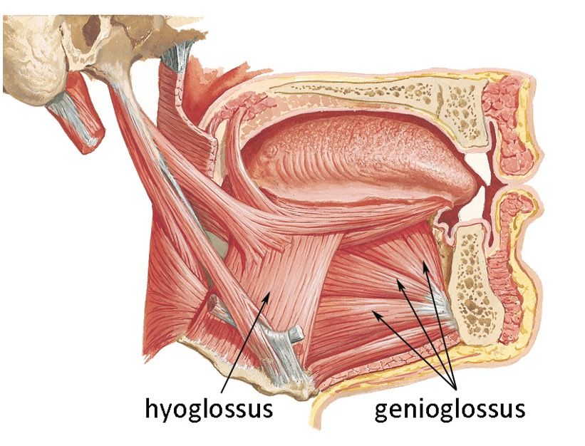
Figure 8-21: Tongue and jaw muscles
Netter medical illustration used with permission of Elsevier. All rights reserved
Unfortunately, if the hyoglossus continues to contract while the tongue elevators also are engaged, the potential exists for laryngeal elevation. The same holds true for the genioglossus muscle, which extends from the point of the chin to the root of the tongue. This is your “tongue-sticker-outer” muscle—a muscle that is quite content to also pull the larynx out of position through interconnections among the mandible, tongue, hyoid bone, and larynx.
Laryngeal Depressors
Nature only has provided three pairs of muscles to counter the action of the laryngeal elevators. The most important depressors,[6] are the sternothyroid muscles, which connect on the inside surface of the sternum and extend to the lower edges of the thyroid cartilage. Contraction lowers the larynx. Ideally, this muscle should expend very little energy: laryngeal positioning does not benefit from active muscular antagonism. The ultimate goal is to release tension in the muscles that can elevate the larynx, leaving the depressors free to anchor the larynx gently in place without actively pulling it down.
Lying in a position superficial to the sternothyroids, the paired sternohyoid muscles follow a path from sternum to hyoid bone (Figure 8-22). Contraction serves two purposes: laryngeal depression and antagonistic resistance to the upward pull of the supra-hyoid elevators.
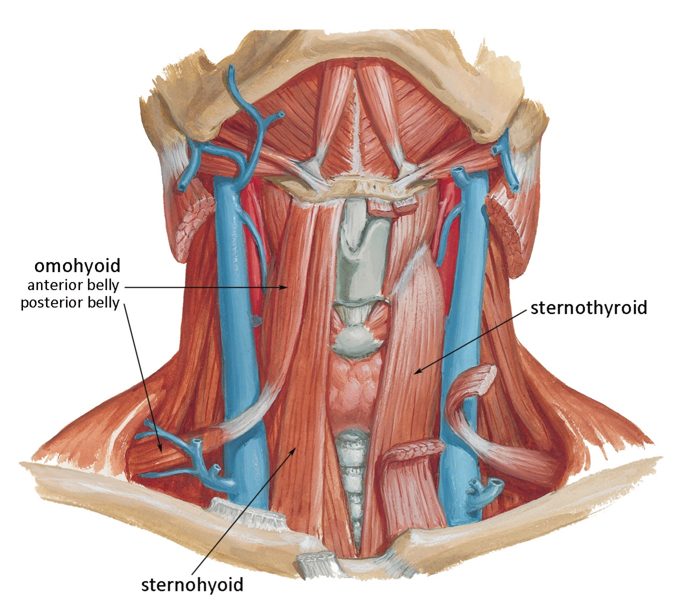
Figure 8-22: Laryngeal depressors
Netter medical illustration used with permission of Elsevier. All rights reserved
The omohyoid muscles, which perform these same two functions, are your shoulder-to-larynx muscles—muscles you probably never even suspected to exist. In this case, the prefix omo- refers to a process on the scapula (shoulder blade). The omohyoids originate at the scapulae, pass through tendinous loops around the jugular veins, and proceed upward to meet the hyoid bone. Presence of these muscles gives further explanation as to why excess tension in the shoulders can negatively impact the singing voice.
Optimal Laryngeal position
Given the numerous possibilities that exist for lifting and lowering the larynx, is there an optimal position for singing? To answer this question, we should first determine its normal resting location. The larynx gradually descends throughout a person’s life. At birth, the base of the cricoid is located at the level of the third cervical vertebra. By age five, it has already descended to C5. Puberty induces the next big change, lowering the larynx to C7, with some additional lowering continuing throughout adulthood (Zemlin, 1998). Pedagogical opinions as to whether the singing position should be altered from the resting position are varied.
Few—if any—classically oriented singers and teachers advocate a high laryngeal position. Speech pathologists and laryngologists also discourage this practice because of its potential contribution to the development of muscular tension dysphonia and other pathological voice disorders. When the larynx is pulled above its resting position, extrinsic muscles attempt to assist in the processes of adduction and pitch modulation. Therefore, the intrinsic muscles—the ones that really should be doing all the work—must contract more aggressively to overcome the antagonism induced by the extrinsics.
There are also resonance consequences of a high laryngeal position. As we learned in Chapter 4, formant frequencies are altered by changes in the length of the vocal tract. When the distance from the glottis to the lips is shortened, all formant frequencies rise uniformly, resulting in a bright sound with a great deal of twang resonance. This increase in twang is perhaps the reason some teachers of belting do advocate a high laryngeal position. The discussion of whether this leads to increased vocal injury is best left to the medical professionals who treat this population of singers. The Broadway stage and recording industry is full of examples of singers who have sustained long careers without vocal distress, providing direct evidence that “safe belting” is possible.
While classical singers generally eschew the high laryngeal position, some favor the opposite approach: active laryngeal depression. In this technique, the depressor muscles pull the larynx to its lowest possible position in the neck. The acoustic effect is opposite that of elevation; all formant frequencies are uniformly lowered, resulting in a darker, rounder sound. Active depression, however, also has the potential to induce excess tension in the intrinsic laryngeal musculature.
In my opinion, the ideal laryngeal singing posture is one that allows the larynx to remain at or very slightly below its natural resting place. To find this position, place a finger on your larynx to note its position and then take a deep, relaxed breath. Notice that your larynx descends a little from start to completion of the inhalation. This is due to the phenomenon of tracheal pull, which occurs when the descending diaphragm pulls down the lungs, bronchial tubes, trachea, and larynx (Figure 8-23).
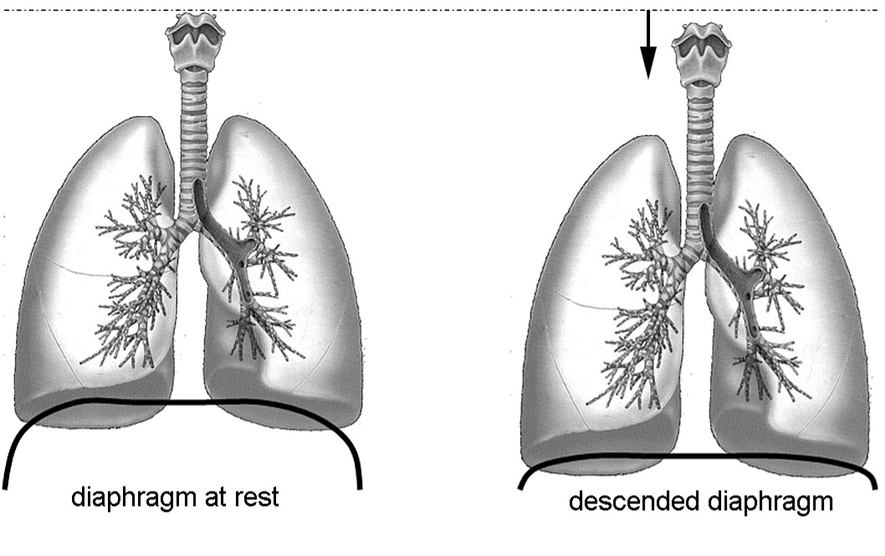
Figure 8-23: Tracheal pull from diaphragmatic descent duing inhalation
In this experiment, your larynx only dropped a little bit when you inhaled, probably less than a centimeter. The diaphragm, however, had moved as much as five centimeters. Why doesn’t the larynx drop by this same amount? The answer lies in the relative flexibility of all the anatomical interconnections. The lungs descend with the diaphragm, but because they are connected to the entire thorax through the action of the pleurae, their top portion moves much less than the bottom. When the trachea is pulled, its flexible structure (cartilaginous rings linked together by a membrane) allows it to be stretched. Downward pull is still exerted on the larynx, but it is much smaller than the diaphragmatic movement that initiated it.
Regardless of where the larynx is positioned, it must not be held rigidly in place; strong muscular antagonism is unwelcomed in this aspect of vocal technique. Much better success will be found by allowing the laryngeal elevators to remain relaxed during singing, thereby permitting gravity—assisted by the gentle anchoring of the depressor muscles—to easily maintain a stable laryngeal posture. Some vertical movement, however, is probably still required. Subtle adjustments to laryngeal height can assist in formant tuning, assisting to make the small variations in vocal tract length that synchronize resonance frequencies with the fundamental or one of its harmonics (we are talking about millimeters, not centimeters).
Laryngeal Innervation
Innervation is the term for the connection between the brain and the various individual parts of the body through the central nervous system. Some of these connections are sensory, allowing you to feel touch and temperature. Others are motor nerves that send signals to muscles telling them when and how strongly to contract. Still other nerves are responsible for monitoring the positions of muscles and other body parts, as well as the amount of stress being applied to them. Nerves in your teeth, for example, tell your jaw muscles not to contract so hard that the teeth are broken.
Two nerves serve the larynx, both of which are branches of the vagus nerve, also called the 10th cranial nerve (Figure 8-24). The vagus leaves the brain and skull through the same opening provided for the jugular vein. It then takes a wandering path through the neck, into the thorax and upper part of the abdomen. The superior laryngeal nerve leaves the vagus from a position in the neck just above the larynx. This nerve has two independent branches: internal, and external.
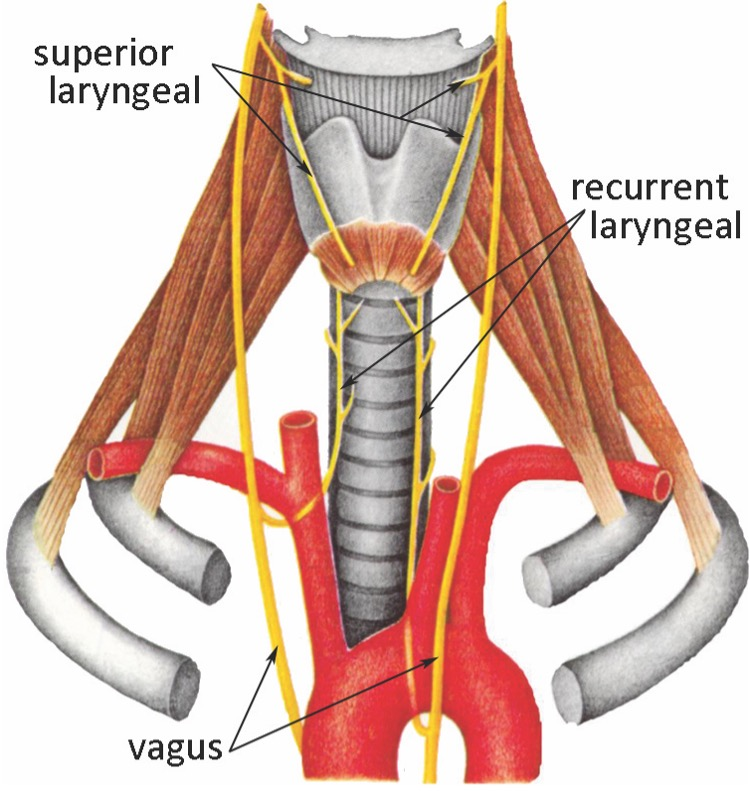
Figure 8-24: Laryngeal innervation
The internal superior is a sensory nerve that enters the larynx through the thyrohyoid membrane to supply the laryngeal mucosa. It is responsible for detecting foreign objects that come into contact with the larynx and also generates the tickle sensation that precedes a cough. The external superior is a motor nerve that supplies the cricothyroid muscle and therefore helps to control ascending pitch. Damage to this nerve can result in symptoms ranging from a chronic throat tickle and resulting dry cough, to loss of all head voice from paralysis of the cricothyroid muscles.
The recurrent laryngeal nerve, a motor nerve that departs the vagus from a position well below the larynx in the upper region of the thorax, supplies all the remaining laryngeal muscles. The left branch of the recurrent nerve loops all the way under the aorta before returning to the larynx and is significantly longer than the right recurrent. This results in the nervous signals reaching the right side of the larynx slightly ahead of those on the left side. The delay is not long enough to create any problems, but some speculation exists as to a possible contribution to vibrato. Damage to the recurrent nerve can result in symptoms ranging from total aphonia (the inability to produce sound) from paralysis of the adductor muscles, to loss of chest voice function from paralysis of the thyroarytenoid muscles.
Conclusion
The larynx, our organ of phonation, truly is a remarkable instrument. Intended as a sphincter valve to protect the airway, it has developed the ability to produce the vast range of sound required for human verbal communication. It is no larger than a walnut, yet is able to produce enough sound to successfully compete with an entire symphony orchestra. Its complex structure and functions are a true miracle of nature. Understanding its anatomy will lead to more efficient teaching—teaching based on accurate physiological principles, not mythology and wishful thinking. Generations of singers have produced beautiful sounds without possessing this knowledge. Today’s singers, however, need not remain in this intellectual vacuum. Knowing how the body functions might not produce artistic singing; it will, however, help guide and inform the learning process, allowing teacher and student to concentrate on those technical precepts that have a true physiologic foundation and a reasonable chance for success.
___________________________
Review Questions
Some even had vocal chords—which begged the question: are they augmented or diminished? ↑
-
I am deeply indebted to Dr. Ingo Titze and the National Center for Voice and Speech their assistance in formulating this concise description of one and three mass models of vocal fold oscillation. Readers and encouraged to visit www.ncvs.org for additional information. ↑
-
The three-mass model is not the final step in describing the vocal folds. The National Center for Voice and Speech website reports that researchers at the University of Iowa now base their computer simulations of vocal fold oscillation on 16-mass models. ↑
-
Please note that glottic opening and closing during phonation is referred to as oscillation or simply vibration. The terms ab- and adduction refer to much larger movements. ↑
-
There is one exception: the stylopharyngeus wraps around the base of the pharynx to open the entrance to the esophagus for swallowing. But because this action always is accompanied by laryngeal elevation, it provides no practical benefit for the open throat in singing. ↑
-
There is nothing pejorative in the term depressor, which simply indicates that the structure connected to the muscle is pulled downward. ↑